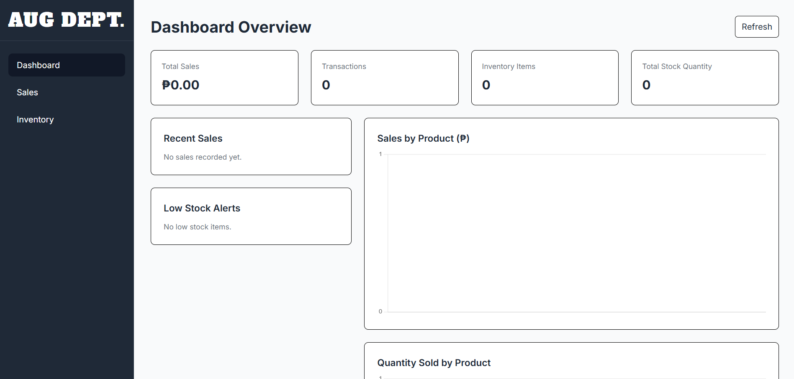
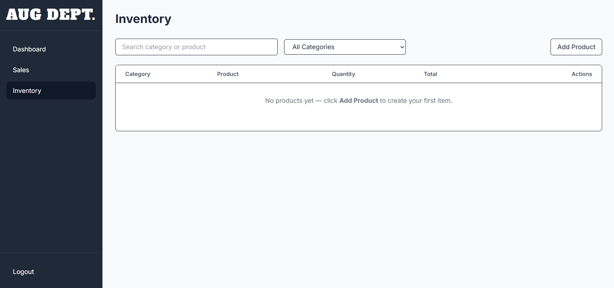
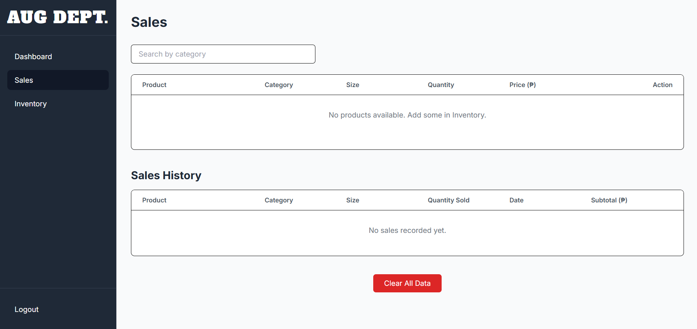
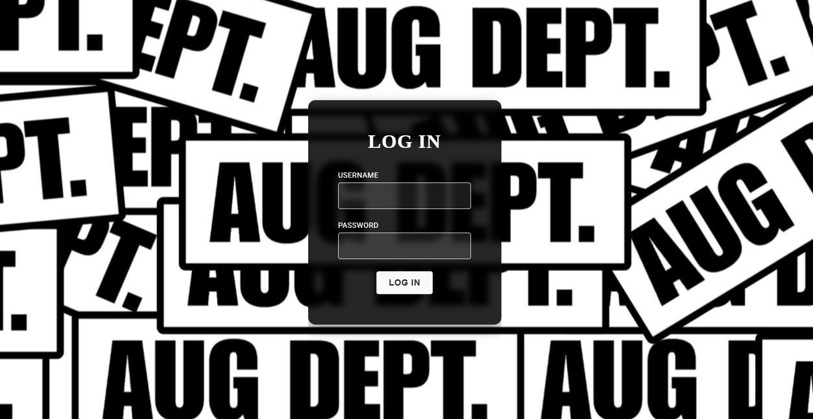

AUG DEPT. Management System — dashboard preview.
Project Overview
The AUG DEPT. Management System is a web application
concept designed to bring essential clothing-store
management activities into one organized workspace.
It provides a structured interface for accessing
dashboard analytics, sales operations, inventory
records, and user management.
The system aims to make day-to-day operations easier
by presenting product and stock information clearly
and providing access to relevant sales summaries.
Instead of navigating separate tools or relying
entirely on manual records, authorized users can
work through a centralized management interface.
The interface also separates administrator
responsibilities from staff activities. This helps
keep administrative functions distinct from routine
sales work.
Key Features
-
Dashboard Analytics —
View summarized sales and inventory information.
-
Sales Management —
Access the sales workflow and relevant sales
records.
-
Inventory Management —
Organize product details, categories, stock
quantities, and related records.
-
Low-Stock Monitoring —
Identify products that reach the configured
stock threshold.
-
Sales Charts and Filters —
Explore sales activity using visual summaries
and available date filters.
-
User Management —
Allow authorized administrators to manage staff
accounts and their access.
-
Role-Based Navigation —
Separate administrative pages from the staff
interface.
System Workflow
01. Authentication
The user signs in using their assigned credentials.
The system identifies the user's role and directs
them to the appropriate interface.
02. Dashboard
Authorized users review the relevant sales and
inventory summaries available to their account.
03. Inventory Operations
Users with the appropriate permissions access
product records, update stock information, and
monitor low-stock items.
04. Sales Operations
Staff access the sales interface to perform
supported sales tasks and maintain sales records.
05. Reporting and Administration
Administrators review available analytics and
manage staff accounts or other administrative
functions when required.
Challenges & Considerations
Organizing inventory data
Product details and stock quantities must remain
consistent and easy to access. A structured
database and appropriate validation help reduce
data-entry errors.
Separating user permissions
Administrators and staff have different
responsibilities. The interface and backend
should enforce the appropriate permissions so
restricted functions are not available to
unauthorized users.
Presenting useful analytics
Sales charts and filters should make information
easier to interpret without overwhelming users
with unnecessary details.
Maintaining a consistent interface
A clear sidebar, predictable navigation, readable
labels, and consistent page layouts help users
move between system modules more efficiently.
Project Screenshots
Explore the main interfaces of the AUG DEPT.
Management System. Replace these image paths with
screenshots captured from your actual application.
Dashboard
A centralized view of sales and
inventory summaries.

Inventory
Product information and stock records
in one interface.

Sales Management
The interface for supported daily
sales operations.

Login
Secure login for patients and administrators to access their respective accounts and features.
Project Outcome
The project brings inventory, sales, and
administrative workflows together in a unified
web interface. Its design emphasizes organized
records, understandable analytics, and access
appropriate to each user role.